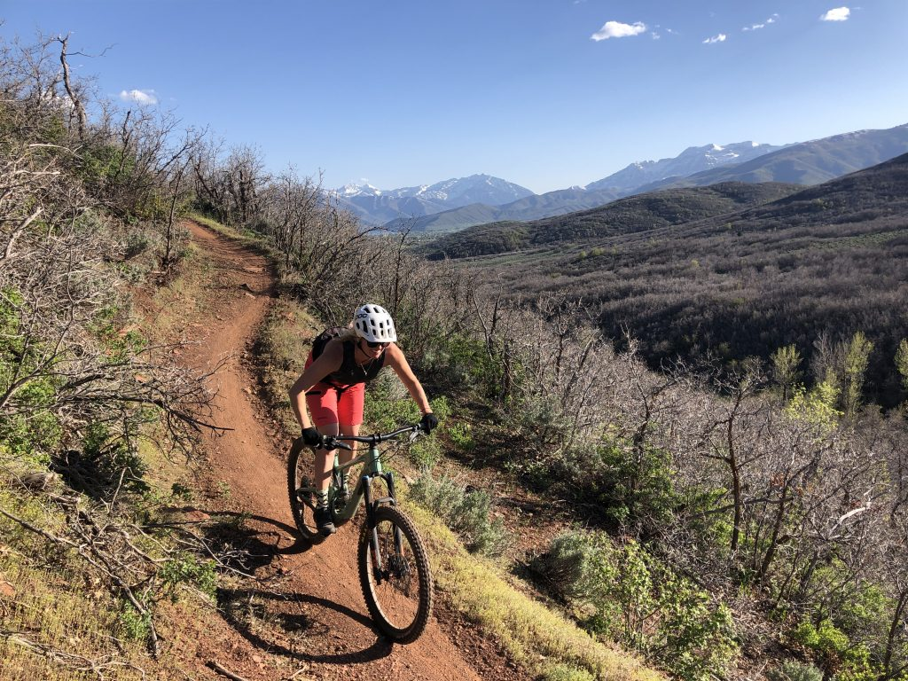
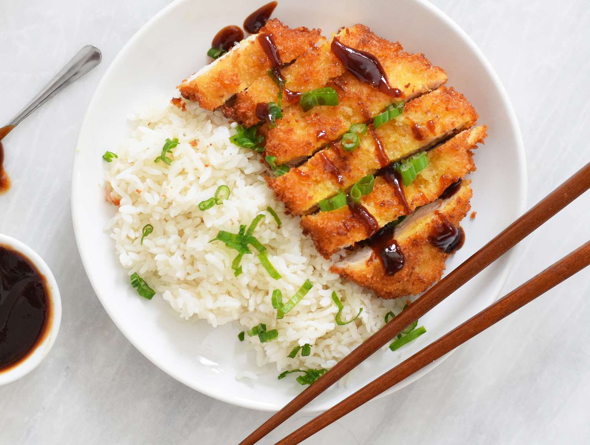

Me:
Yes this is me, and yes this is the highest quality picture of me that I could find on the internet.
Aside from the few things I think are core things I do, I have other hobbies that include
drawing, weight lifting, and baking. Although I mentioned a few things, I won't be talking about those.
Mountain Biking

Mountain biking is really fun, but also the worst experience ever, and
the most meticulous form of torture known to man. Usually whenever I go biking I bike about 8 miles, any more and my legs refuse to work.
Currently I don't have a bike as I sold it to get a better one next season.
Cooking

I like cooking, cooking in itself isn't that fun, and honestly im kinda bad at it.
BUT cooking also means I get to eat good food, so therefore I learned how to.
One of my favorites is Chicken Katsu.